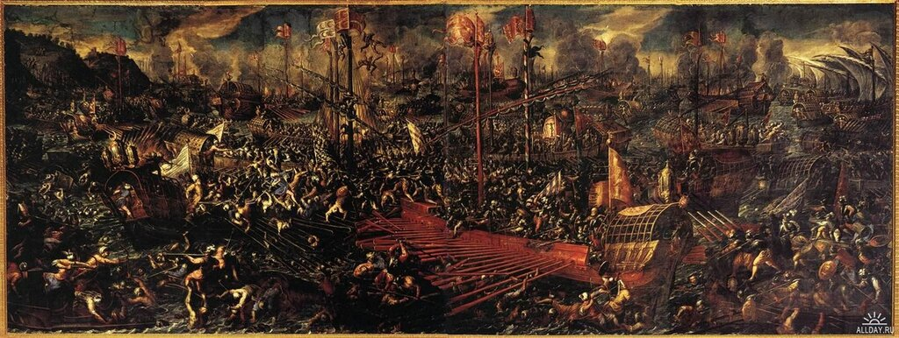
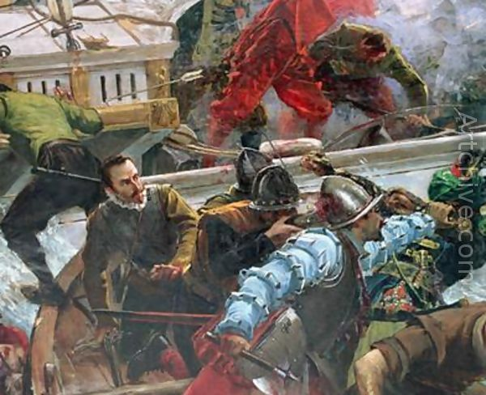
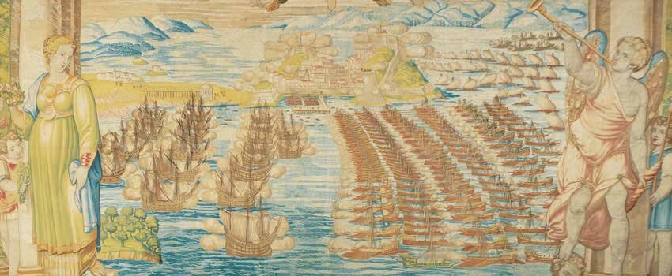

На борту флагманской галеры Дона Хуана начался первый после победы Военный совет объединенного флота Лиги. Венецианцы настаивали на продолжении кампании с целью освобождения островов, занятых турками летом. Дон Хуан в свою очередь предложил напасть на Лепанто, крепости которого были обескровлены в результате проведенной там Муэдзинзаде Али-пашой срочной мобилизации солдат накануне битвы. Остальные члены совета предпочитали завершить кампанию, учитывая конец сезона и состояние флота после сражения. В конце концов решили выдвигаться на Корфу и по пути освободить от турок остров Лефкас. Но когда 12 октября флот прибыл к острову, стало ясно, что отягощенные трофеями, с захваченными турецкими галерами на буксире, христианские корабли являются небоеспособными и операция по захвату Лефкаса займет не менее двух недель, которых по погодным условиям у христиан не было. Решено было отложить любые дальнейшие действия до весны.
К этому времени были подведены первые итоги сражения. О них мы уже однажды говорили, сейчас остановимся более подробно на трофеях битвы и материальных потерях сторон.

Сражение при Лепанто. Картина Андреа Вичентино (1603). Дворец дожей. Венеция
Всего у турок было захвачено 117 галер и 13 галиотов. Из них 19 галер и 2 галиота были переданы папскому государству. Испанцы получили 58 с половиной галер (именно так, 58 ½ ) и 6 с половиной галиотов. Венеции перешли, соответственно, 39 с половиной галер и 4 с половиной галиота. От 80 до 90 галер турецкого флота было потоплено или они разбились при высадке экипажей на берег. Избежали гибели или плена от 40 до 50 турецких галер. Захваченные у турок орудия были распределены в той же пропорции, что и корабли. Количество захваченных куршейных пушек равнялось числу захваченных галер, из орудий малого калибра распределению подверглись 256 орудий и 17 казнозарядных камнеметов (petriera). Конечно, и мы об этом писали, в «общак» попали не все захваченные трофеи, в том числе и не все пушки: значительную их часть под шумок умыкнули командиры галер. Известен официальный протест Себастьяна Веньера испанскому королю в связи с тем, что испанцы исключили из подлежащих разделу трофеев большое количество средних и крупных орудий, захваченных у турок. Папа издал распоряжение об отлучении от церкви каждого, кто посягнет на захваченные трофеи, но на закаленных галерных бойцов такие угрозы не действовали.
О спорах, кому передать высокопоставленных пленников, мы уже упоминали выше. В конце концов, решено был всех их отдать папе. В группе оказались дети Муэдзинзаде Али-паши, Салихпашазаде Мехмед бей, Каур Али и Хинди Махмуд. Обращались с ними обходительно, Дон Хуан даже направил наставника детей Али-паши в Константинополь, чтобы тот мог сообщить матери, что ее дети живы.
Тяжелые потери понес и флот христиан. По приблизительным подсчетам, на кораблях Испании, Венеции и понтифика было убито 7650 человек и ранено 7800. Самую высокую цену заплатили венецианцы (4863 убитых и 4604 раненых). На галерах папы было убито 800 человек и около одной тысяча ранено. Для испанцев эти цифры составили соответствено 2000 и 2200 человек (одна только сицилийская терция потеряла шестьсот человек убитыми). К этому надо добавить цифры потерь на галерах Мальты, Генуи, Савойи и Тосканы. Относительно потерь среди гребцов достоверные цифры отстутствуют. Известно, например, что одиннадцать галер Джованни Андреа Дориа потеряли убитыми 74 гребца, т.е. около 7 убитых невольников на одну галеру. Если сохранить эту пропорцию для других галер, то получим семьсот убитых гребцов-невольников на ста галерах. Но это очень приблизительная оценка. Надо принять во внимание, что отдельные галеры, такие как Капитана Мальты, тосканская Fiorentza и Piemontesa из Савойи были уничтожены практически полностью со всеми своими экипажами. С другой стороны, были такие галеры, как например флагманская галера государства Генуи под командованием Этторе Спинолы, на которой было лишь несколько раненых солдат и один убитый гребец.
Ввиду того, что представители знатных семейств в офицерском корпусе галер имели доспехи высокого качества, число убитых среди них относительно невелико. Реестр потерь в испанских терциях включает 57 человек, включая раненых дон Лопе де Фугероа и Пагано Дориа.

Из почти ста рыцарей ордена св. Стефана погибли пятнадцать. Сорок погибших рыцарей мальтийского ордена находились в основном на флагманской галере Джустиниана. Венецианцы потеряли убитыми и тяжело ранеными около пятидесяти офицеров и представителей дворянских фамилий, в числе их Барбариго.
Общие потери христиан убитыми, тяжело ранеными и попавшими в плен (на корабли Улудж Али) можно оценить цифрой 20 000 человек. Не вернулись из боя от 12 до 16 галер.
Дон Хуан, верный своему слову, освободил гребцов-невольников на своих галерах, которые взялись за оружие во время боя и воевали на стороне христиан. Из опасений, что победители захотят увеличить свою добычу за счет захвата рабов на османских галерах, Дон Хуан издал приказ о немедленном освобождении всех рабов-христиан. Всего было освобождено от 12 до 15 тысяч рабов.

Галерные рабы на тосканской галере. Из книги Niccolò Capponi Lepanto 1571. La Lega santa contro l'Impero ottomano, 2010
Командующий венецианской эскадрой Себастьян Верньер также хотел последовать примеру Дона Хуана и освободить рабов на своих галерах, однако руководство Светлейшей отказало ему.
После остановки на Лефкасе, объединенный флот Священной лиги двинулся на Корфу.

Возвращение христианского флота на Корфу.